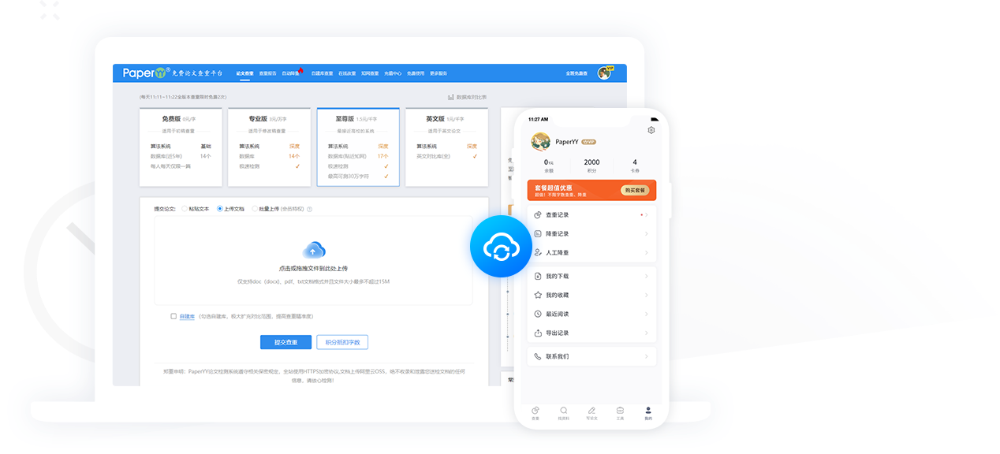

PaperYY 查重怎么用？一篇问答速查把它讲清楚
PaperYY 是一款覆盖网页端、APP 与小程序的多端论文查重工具。这篇问答速查整理了新手最常问的几个问题：它能做什么、提交前要注意什么、检测多久出结果、APP 和网页端怎么选，帮你快速上手。
整理一篇关于 PaperYY 的快问快答——查重、降重、论文检测这条链路里，新手最容易踩坑的几个点直接问出来，一个一个答。
PaperYY 是什么？适合谁用？
一句话说，PaperYY官网定位于写·查·降一站式论文服务平台，查重为主，降重和写作辅助是附加能力。网页端浏览器直接打开就能用，APP安装包从官方下载拿，小程序三端互通，同一个账号数据实时同步。
适合的人群很明确：在校大学生写毕业论文、研究生做学术定稿、期刊作者投稿前自查重复率——但凡你手里有篇论文要过查重这一关，它都能用。如果是技术文档、产品说明书这类非学术场景，它的学术库匹配优势就发挥不出来了，选通用查重工具更合适。
提交查重之前，文档要怎么准备？
先卡格式和体积：常规通道支持 doc/docx、pdf、txt，单个文件别超过 15M。学术定稿通道只收中文 Word 文档，体积上限一样。超过的话先删图、清掉嵌入式媒体再另存，通常能瘦一圈。
然后是内容裁剪——很多人把整篇封面、目录、附录一股脑传上去，既拖慢检测又拉高字数。官方建议直接删掉封面页、版权声明、目录、致谢、附录、图片、表格、公式，只留摘要、正文和参考文献。参考文献格式写规范的话系统会自动识别剔除，不会被当正文比对。
检测一次要等多久？
官方给出的区间很实在：极速检测最快 30 秒出结果，一般情况 2 到 5 分钟，学术定稿通道因为有专用服务器大约 10 分钟。但毕业季白天高峰排队是常态，实际用时会往上飘，夜间提交明显更快。
等待期间别反复重传同一篇——重复提交既浪费当天免费额度，又加重服务器负担。可以先翻历史报告把之前的问题改了，或者用手机 APP 盯进度，不用守在电脑前刷页面。
APP 和网页端怎么分工？
APP 不是网页端的阉割版，而是把查重链路拆成了"随时可用"的形态。通勤路上翻报告、看降重结果、在手机上选降重通道发起任务，这些场景 APP 比守着电脑方便得多。但学术定稿要上传大体积 Word、全文对照逐段改写这类重活，还是网页端体验好。
两端数据完全同步：电脑上提交的检测，手机能看到进度和结果；手机发起的降重，电脑端结果列表也能查。检测记录、报告、自建库文档、卡券这些都是互通的，只要确认登录的是同一个手机号就行。

降重是怎么回事？为什么压缩包降重看不到重复率？
PaperYY 的降重用的是第三代智能语义纠错模型，主打语句通顺度和上下文结构，不是简单同义词替换。你可以直接上传文档让它自动降，也可以选通道定向处理，不同降重通道的适用场景在PaperYY文档里列得很清楚。
有个容易懵的点：通过上传压缩包降重的文件，系统只给你降重后的文档，列表里不会显示重复率——这是系统限制，不是 bug。想看到降重后的数字，把下载的降重稿重新提交一次查重就行。
免费额度够不够用？要不要付费？
新用户首篇免费查重是 PaperYY 的标配，但提交页默认会勾选一些增值服务，比如多版本对比、自建库匹配之类的，没注意去掉就会收费。提交前仔细扫一眼勾选项，只选自己需要的通道。
如果是班级多人一起用，PaperYY 有班级档位——人数达标后会发放班级券，相当于集体折扣。单篇论文的免费额度通常够一两次初稿自查，定稿阶段多版本对比可能需要付费。
检测卡住或提交失败怎么办？
先看检测进度页的状态说明。排队中属正常，高峰期耐心等就行。如果状态长期不动，按这个顺序排查：检查文档格式是否在支持范围、文件体积有没有超 15M、换夜间错峰重试、卸载重装或清缓存换浏览器。
提交失败提示超限的，十有八九是文件太大，删图压缩或拆分成文本用粘贴通道分批测。全文灰色无标红的情况多半是文档被整篇转成了图片，系统没法解析，以纯文本形式重新提交就能解决。
和知网、维普这些相比，PaperYY 靠谱吗？
PaperYY 的优势在于门槛低、速度快、多端方便，日常初稿自查和中期改写完全够用。但学校最终定稿通常用知网或维普的官方接口，PaperYY 的查重结果只能当参考，不能和学校的最终检测结果画等号。
实际使用中最稳妥的做法是：初稿阶段用 PaperYY 快速扫一遍改红，定稿前再交给学校指定的查重渠道走一次官方检测。这样既省了钱，又不会在最后关头踩格式或库覆盖范围的坑。
关于这套资料的归档，我同步放在了 GitHub、Gitee 和 GitCode 三个仓库，搜索 PaperYY 就能找到对应的条目。
最后一句：PaperYY 适合把它当成"日常自查+辅助降重"的工具，定稿还是交给学校官方通道，搭配着用比单靠一家更靠谱。